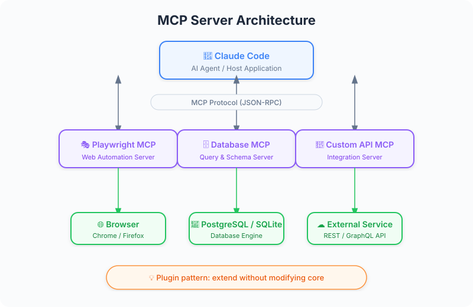

Figure: MCP server ecosystem taxonomy.
Figure: MCP server ecosystem taxonomy.
| Item | Details |
|---|---|
| Exam Coverage | D2 — Tool Use & Integration (18% of exam) |
| Task Statements | 2.4 ★★★ (MCP integration), 2.1 ★★ (tool interfaces), 2.3 ★★ (tool distribution) |
| Course Source | claude-code-in-action / 04-integrations / Lesson 12 |

Figure: MCP plugin architecture flow.

MCP servers are Claude Code's plugin system. They let you extend what Claude can do — browse the web, query databases, interact with APIs — without changing Claude Code itself. For PMs, the key insight is that MCP servers turn "Claude cannot do X" into "Claude can do X" at an architectural level. This is fundamentally different from prompt engineering, which only works within Claude's existing capabilities.
| Concept | App Store Analogy | MCP Server Reality |
|---|---|---|
| Core product | iPhone out of the box | Claude Code's built-in tools (Read, Write, Bash, etc.) |
| Extension | Installing an app | Adding an MCP server |
| Permission | "Allow Camera access?" | "Allow mcp__playwright tools?" |
| Ecosystem | App Store catalog | MCP server registry |
| Configuration | App settings | .claude/settings.local.json |
🎯 Core Exam Philosophy (PMs must remember)
- Architecture > Prompt — If Claude needs a capability, give it a tool (MCP server). Do not try to prompt it into doing something it structurally cannot do.
- Explicit Permissions > Blanket Access — Especially in CI/CD, each tool must be individually allowed.
Your team uses an AI-powered component generator. The generated components look generic — lots of purple-to-blue gradients and standard Tailwind patterns. The product goal is to produce more creative, distinctive components.
| Approach | Implementation | Result |
|---|---|---|
| Prompt engineering only | Add "be more creative" to the generation prompt | Marginal improvement — Claude has no visual feedback |
| MCP + visual feedback loop | Install Playwright MCP → Claude generates component → Claude opens browser to see result → Claude updates prompt based on visual evaluation | Significant improvement — Claude iterates based on actual visual output |
💡 PM Decision Framework
Ask yourself: "Does this require Claude to perceive or interact with something outside its context window?"
- Yes → You need an MCP server (architectural solution)
- No → Prompt engineering may suffice
| Impact Area | Without MCP | With MCP |
|---|---|---|
| Visual QA | Manual review by humans | Claude verifies UI automatically via Playwright |
| Database operations | Copy-paste query results into Claude | Claude queries DB directly |
| API testing | Manual endpoint testing | Claude tests endpoints and validates responses |
| Development velocity | Claude generates code blindly | Claude generates, verifies, and iterates autonomously |
MCP servers have a permission model that PMs should understand for risk assessment:
| Setting | Location | Who Controls | Security Level |
|---|---|---|---|
| Local allow-all | .claude/settings.local.json |
Individual developer | Low — convenient for dev |
| Project shared | .claude/settings.json |
Team / Tech Lead | Medium — team standard |
| CI/CD explicit | GitHub Actions workflow file | DevOps / Team | High — each tool listed individually |
💡 PM Takeaway
In production/CI contexts, MCP tool permissions must be explicitly listed one by one. There is no blanket "allow all tools from this server" shortcut. This is a deliberate security design — include it in your risk assessment.
Your team wants Claude Code to verify that generated UI components match the design specification. Currently, developers manually compare screenshots. What would you recommend?
A PM is scoping an AI-powered feature that needs Claude to interact with a PostgreSQL database. The engineer says "we can just tell Claude the schema and have it write queries." What is the better approach?